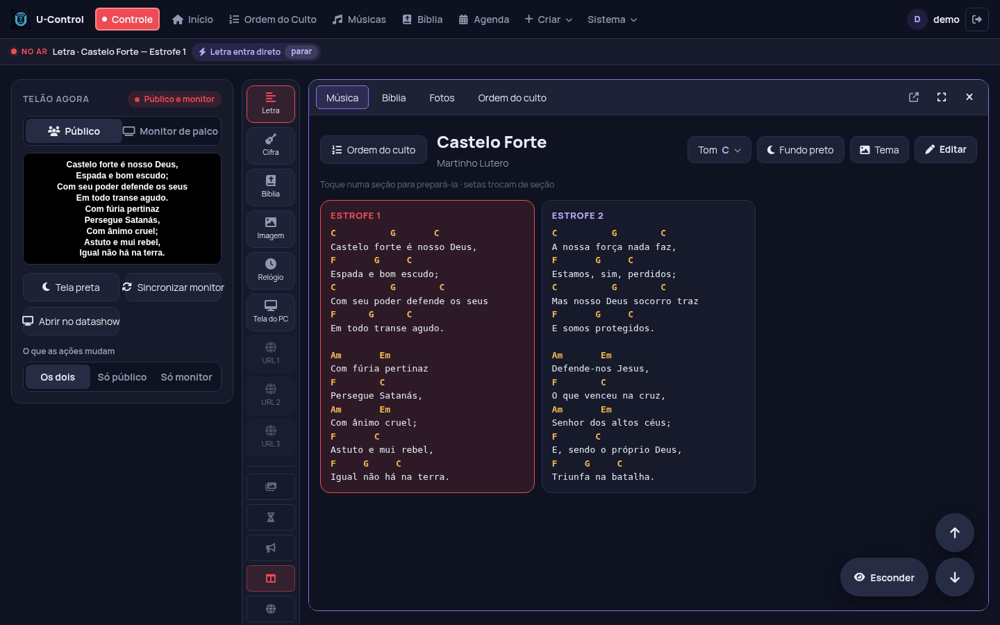
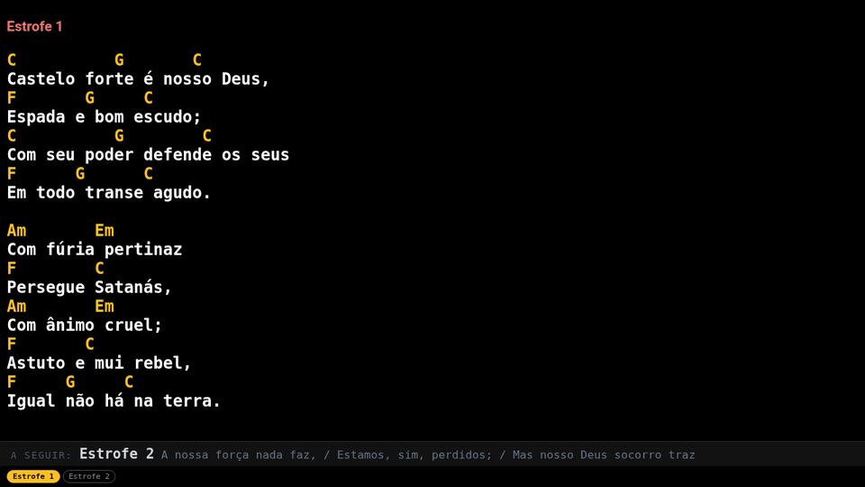
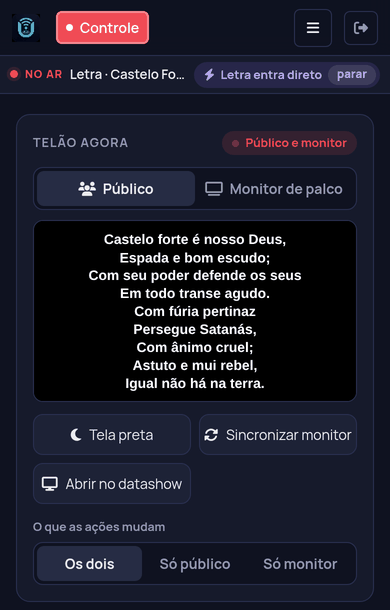

A projeção da sua igreja, controlada pelo celular
Letras com cifra, Bíblia, PowerPoint, fotos, vídeos e a ordem do culto no telão. Um computador roda o U-Control, e qualquer celular, tablet ou PC da rede comanda. Não precisa de internet durante o culto.
Também roda no Raspberry Pi, no Linux e no Docker.
Como funciona
Quem opera não precisa ficar preso ao computador do telão: pode estar no palco, na mesa de som ou em qualquer lugar da igreja.
Instale num computador
O computador ligado ao telão roda o U-Control. No Windows, é só instalar; o programa fica na bandeja, ao lado do relógio.
Abra no celular
Na mesma rede (Wi-Fi ou cabo), aponte a câmera para o QR code ou digite o endereço. Nada para instalar no celular.
Comande o culto
Um toque e a letra, o versículo ou o slide vão para o telão. O monitor de palco dos músicos acompanha junto.
Tudo que o culto precisa
Feito dentro de uma igreja, para o dia a dia da equipe de mídia e do louvor.
Letras com cifra
O telão mostra só a letra; o palco vê a cifra e a próxima parte. Cada músico muda o tom no próprio aparelho.
Bíblia em duas versões
Busca por referência e duas traduções ao mesmo tempo no telão. Traduções livres já incluídas.
PowerPoint com animação
Envie o .pptx e os slides vão para o telão, com transições, animações e as fontes do Canva.
Ordem do culto
Monte a sequência antes: músicas, leituras e avisos abrem na ordem, um depois do outro.
Fotos e vídeos
Galeria de imagens e vídeos. Qualquer pessoa da igreja pode mandar fotos pelo celular.
Tela do PC e sites
Mostre a tela de um computador da rede, ou abra um site em tela cheia e role pelo celular.
Stream Deck
Botões físicos para próximo, anterior, tela preta, avisos e cronômetro, pelo Companion ou similares.
Relógio, cronômetro e avisos
Contagem regressiva para o início, relógio e avisos passando no rodapé de cada tela.
Traga suas músicas
Importe do Holyrics, OpenLP, OpenSong, ChordPro ou texto. Backup completo e envio de músicas e cultos para outro PC.
Uma tela para cada pessoa
Público, músicos e quem opera veem cada um o que precisa, sempre em sincronia.


O Controle cabe no bolso
O mesmo Controle funciona no celular e no tablet, pelo navegador. Dá para operar do fundo da igreja, do palco ou da mesa de som. Mais de uma pessoa pode controlar ao mesmo tempo.
Baixe e instale
Escolha onde o U-Control vai rodar. Os celulares e as outras telas só precisam de um navegador.
Windows
Instalador com tudo incluído. Abre as telas no segundo monitor ou datashow e avisa quando sai versão nova.
Baixar o instaladorRaspberry Pi / Linux
Ubuntu, Debian, Mint ou Raspberry Pi OS. Um Raspberry Pi vira o servidor da igreja, gastando pouca energia. Um comando instala:
curl -fsSL https://brunomint.github.io/U-Control/instalar.sh | bashDocker
Para quem já tem um servidor. Imagem pronta para PC e Raspberry Pi:
docker compose up -dPerguntas
É gratuito mesmo?
Sim. O U-Control é de código aberto (licença MIT): sem mensalidade, sem anúncios e sem limite de uso. Pode instalar em quantos computadores quiser.
Precisa de internet?
Não durante o culto. Tudo roda na rede local da igreja. A internet só é usada se você quiser, por exemplo para baixar áudio do YouTube ou abrir um site no telão.
Quais Bíblias vêm incluídas?
Só traduções de licença aberta ou de domínio público, como a Bíblia Livre e a Nova Bíblia Viva. Traduções com direitos autorais (NVI, ACF, ARC…) podem ser adicionadas pela igreja que tem o direito de usá-las.
Já uso outro programa. Perco minhas músicas?
Não. O U-Control importa músicas do Holyrics (JSON), do OpenLP e de outros programas (OpenLyrics), do OpenSong, ChordPro e texto, sem redigitar.
Que computador precisa?
Um computador comum com Windows, ou um Raspberry Pi. Para converter PowerPoint, o Windows usa o LibreOffice, que o instalador oferece junto.
Encontrei um problema. Onde aviso?
Abra uma issue no GitHub, ou tire dúvidas nas Discussões.
Experimente no próximo culto
Instale, crie o primeiro usuário e abra o Controle no celular. Leva poucos minutos.